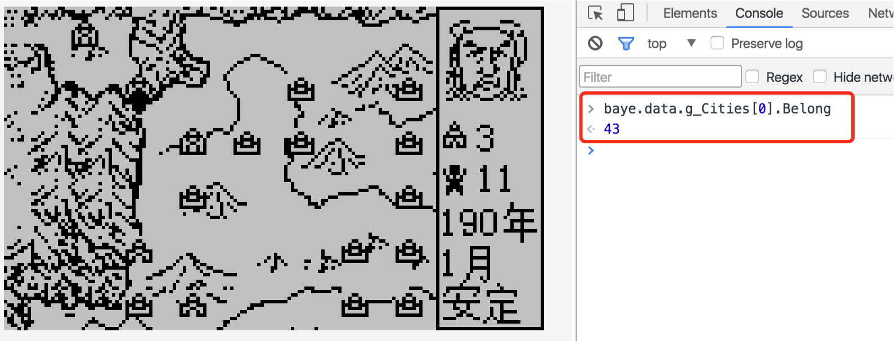
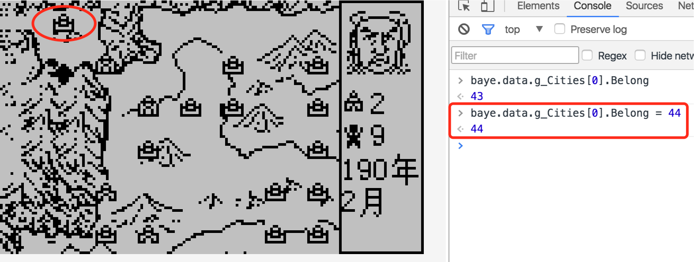
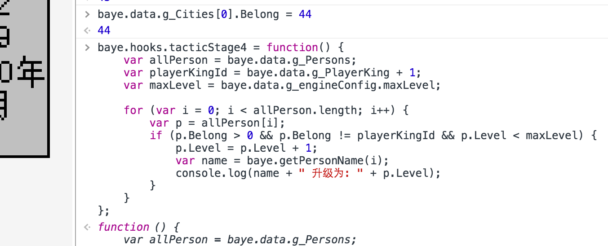
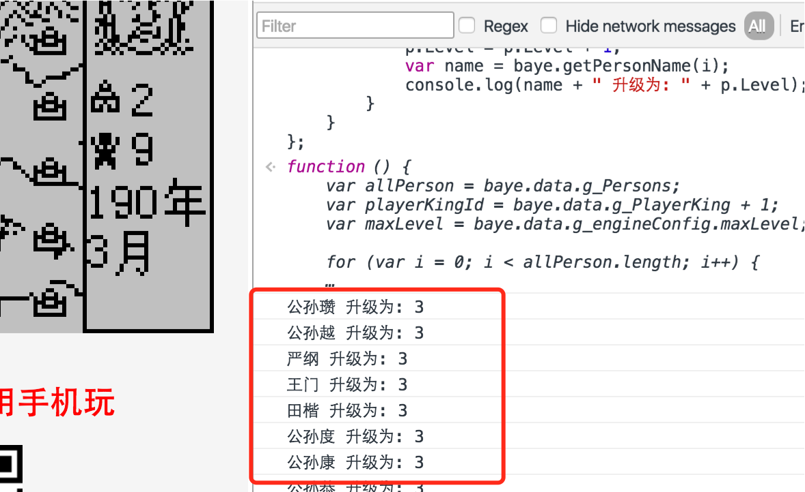

4. 调试方法¶
我们使用PC浏览器的 “开发者工具” 来调试脚本。以Chrome浏览器为例，打开baye页面后按 F12 打开“开发者工具”。
如下图：
4.1. 实时查看和修改引擎数据¶
霸业的引擎数据存放在 baye.data 对象中，浏览器控制台中输入 baye.data. 浏览器会弹出自动补全菜单，对象中有哪些属性一览无余。如图：
查看第一个城池的归属：
修改第一个城池的归属：
修改后移动一下城池光标，可以看到已经实时生效。
4.2. 实时替换钩子函数¶
调试钩子函数时，如果每次修改一点脚本，又重新打包lib->重新加载运行，会非常麻烦。 当我们修改了钩子函数后，只需在浏览器控制台对该钩子重新赋值，该钩子就即时生效。如图：
4.3. 添加调试日志¶
有时候为调试代码中的逻辑是否按预想的逻辑正常执行，我们需要得到一些实时输出信息。
我们用 console.log 来实现日志功能。
例如，前面的升级功能，我们要先看升级功能有没有正常执行，可以添加一些日志:
baye.hooks.tacticStage4 = function() {
var allPerson = baye.data.g_Persons;
var playerKingId = baye.data.g_PlayerKing + 1;
var maxLevel = baye.data.g_engineConfig.maxLevel;
for (var i = 0; i < allPerson.length; i++) {
var p = allPerson[i];
if (p.Belong > 0 && p.Belong != playerKingId && p.Level < maxLevel) {
p.Level = p.Level + 1;
var name = baye.getPersonName(i);
console.log(name + " 升级为: " + p.Level);
}
}
};
策略结束后，可见到控制台打印如下：
